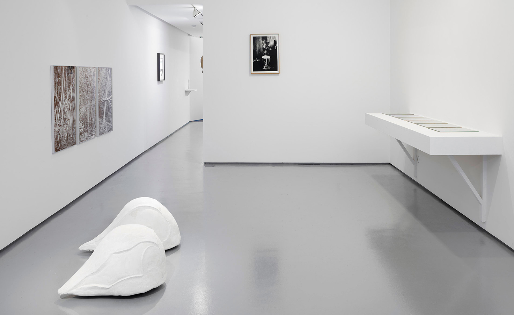
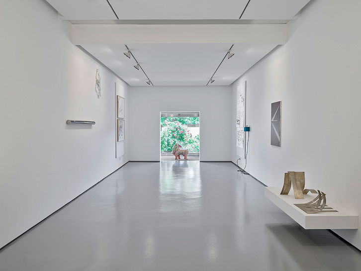
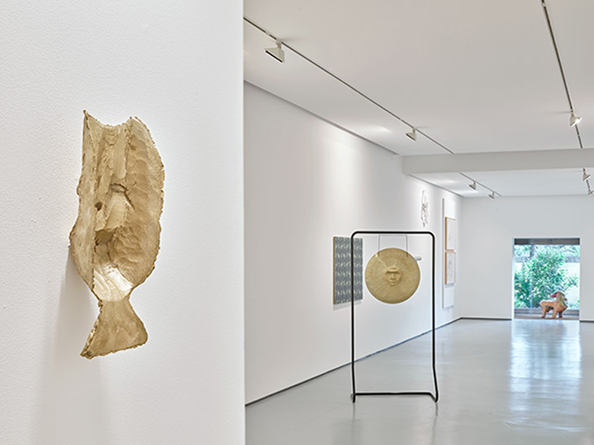
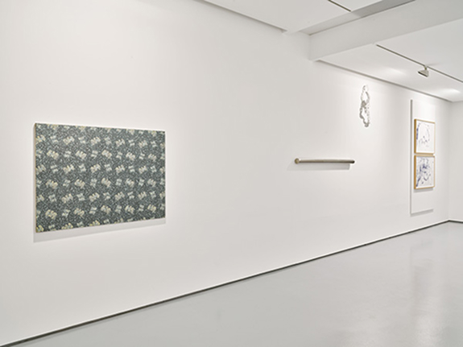
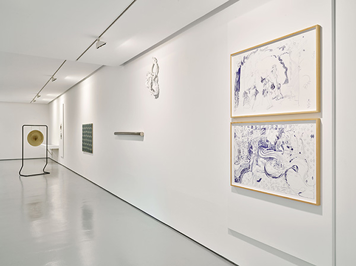

Attentive to the context for which it was conceived, Aria of Enchantment brings together five decades of artistic production that reinforce the city's cultural landscape. Based on the Quadrado Azul Gallery's collection, guest artists are brought together, appearing here, in this aria of time, as elements of novelty, contemporary to the present. A contemporaneity that is not defined by the year of creation of the works on display, but rather by their timeless conviviality – considered companions of the now – regardless of their contexts of production. The exhibition lives on time and impulse and takes shape in the subtle passage between the past and the future.
aria
Even if sumptuous, exuberant and baroque, focused on a profuse
narrative, enhanced by the charm of the performer's voice, an aria
provides balance and continuity, giving space to spontaneity,
surprise and contrast. The subtitle of the exhibition, ‘A flower
that perhaps does not distinguish between heaven and earth’, quotes
the inscription on the drawing given by Álvaro Lapa to Manuel
Ulisses, founder of the gallery. This telluric inscription reminds
us of our position of bewilderment in the face of the present. An
exercise in contemplation that the present demands, in which we
cease to be indifferent to time, thus giving more space to
interpretation and valuing routine aspects – now is the time to feel
and think. In an inconsequential way, the inscription seems to
indicate a narrative for the exhibition that brings together the
work of eighteen authors who, like an aria, rehearse the stakes and
uncertainties of their future.
Inherent in any work of art is its power to unsettle and seduce. Beyond the auratic charge, new layers of interpretation are defined that arise from the relationships they establish with each other, seeking to highlight their immaterialities: works that advocate myth and the telluric, that live off morphology and sound, that are composed of rhythms and geometric forms.
At a time when it is necessary to rethink our relationship with the present, which urges us towards the “new” and its reinvention, this exhibition translates into a composition full of exuberant, surprising and revealing acts.




Galeria Quadrado Azul, Porto
15.04 —05.06.2021
Porto City Hall, Situação 21
Miguel von Hafe Perez
Luís Pinto Nunes,
Luís Albuquerque Pinho
Filipe Braga
Alberto Carneiro,
Álvaro Lapa,
Ângelo de Sousa,
Diana Carvalho,
Fernando Lanhas,
Francisco Oliveira,
Francisco Tropa,
Isabel Carvalho,
João Marçal,
João Pais Filipe,
Mariana Caló e Francisco Queimadela,
Mariana Barrote,
Musa Paradisiaca,
Pedro Tropa,
Sam Baron,
Sara Graça,
Zulmiro de Carvalho